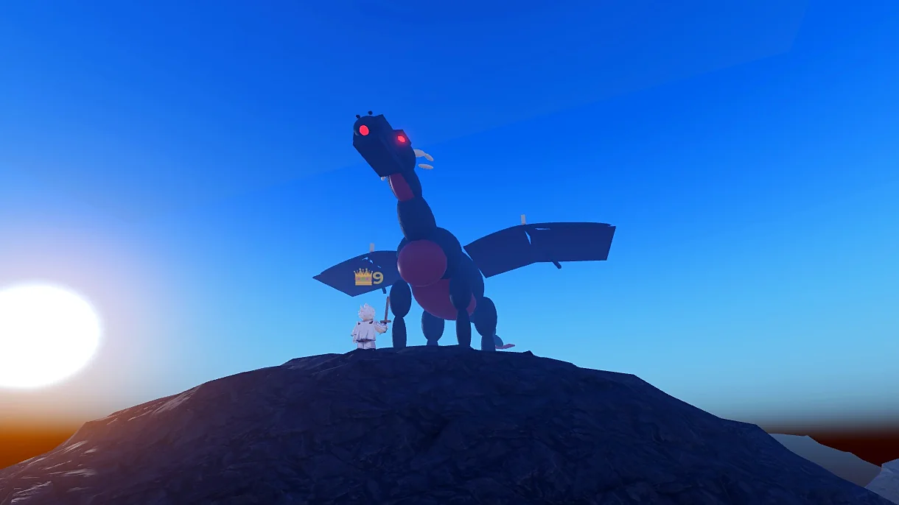

Raid boss
Vyrthrax the Undying
A hundred years asleep on a bed of melted crowns. Every child in Lionsgate grows up hearing his name. Lately the Maw has been warm again, and the whelps have started hatching.
Dragon's Maw · Level 22–30 · Bring friends. Bring a lot of friends.